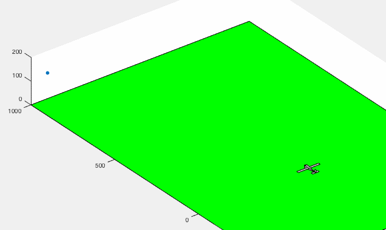

Arkiv
Klippet fra min første hjemmeside/blog som jeg skrev da jeg fortsatt var student. Trodde jeg skulle skrive mye blog da, men gjorde ikke det. Blir sikkert ikke så mye mer denne gangen.
Arkiv
Klippet fra min første hjemmeside/blog som jeg skrev da jeg fortsatt var student. Trodde jeg skulle skrive mye blog da, men gjorde ikke det. Blir sikkert ikke så mye mer denne gangen.
 Jeg hadde nettopp lært meg om autopiloter i faget fartøystyring og fra en av bøkene i kurset. Det er en full fysikksimulering med aerodynamikk og stivt-legeme-dynamikk (finnes det et bedre navn?) og vær og vind.